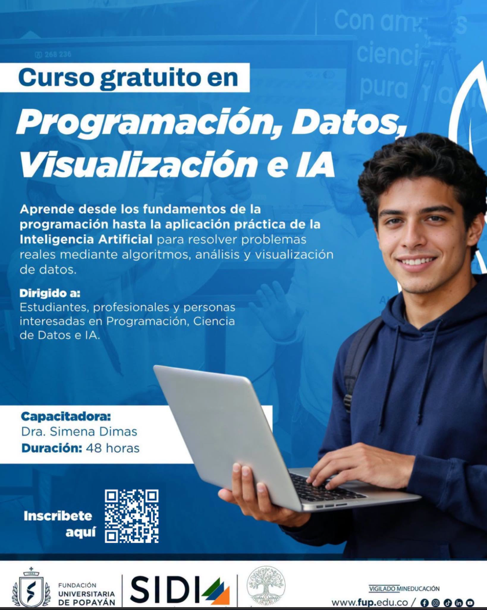

Idea base
Algoritmo
Un algoritmo es una receta de instrucciones. Primero entendemos el problema, luego lo partimos en pasos, reconocemos patrones y finalmente escribimos reglas que el computador pueda seguir.
Bitácora visual · Curso finalizado
Registro final de las cinco clases virtuales desarrolladas con la profesora Simena Dinas.
Bitacora presentada por Daniel Pantoja Disenador grafico Universidad del Cauca
Clase 1
La clase inicio con la idea de algoritmo como una receta: una secuencia de pasos claros para resolver un problema. Luego pasamos a variables, datos, decisiones, ciclos, listas y logica anidada.
Idea base
Un algoritmo es una receta de instrucciones. Primero entendemos el problema, luego lo partimos en pasos, reconocemos patrones y finalmente escribimos reglas que el computador pueda seguir.
Pensamiento computacional
Como en un proyecto visual, no se resuelve todo de una vez: se separa el problema en partes, se mira que se repite, se definen variables y se organizan decisiones.
Linea de tiempo
(Desliza para ver los temas vistos en clase)
Clase 1
Fundamentos de pensamiento computacional y PythonHaz clic en cada etapa para conocer su contenido.
Todos - 01 / 15
Categorias vistas en clase
Repositorio de ejemplos
Este espacio reune los fragmentos pequenos de la clase y el archivo completo para entregar o presentar.
Cierre de Clase 1
La conclusion de la clase es una muestra en Python que usa variables, constantes, tipos de datos, decisiones, ciclos, listas, break, continue y logica anidada en un solo recorrido.
Para reforzar, el tema que mas conviene repasar es for: imaginarlo como caminar por una fila ayuda a entender por que sirve para recorrer listas, nombres, notas o rangos.
Clase 2
En esta clase empezamos a organizar el codigo en funciones. El cierre de la sesion quedo en un ejercicio de figuras geometricas: primero se elige entre circulo u ovalo y despues el programa llama las funciones necesarias para calcular area y perimetro.
Idea general
Una funcion permite guardar una tarea bajo un nombre. Asi el programa deja de repetir formulas y cada parte queda mas facil de leer, probar y explicar.
Ejercicio de hoy
El menu pregunta que figura se desea calcular. Si se elige circulo, usa radio; si se elige ovalo, usa radio 1 y radio 2. Cada opcion llama funciones distintas.
Linea cronologica
Clase 2
Funciones, parametros y calculos geometricosContenido de la Clase 2
Haz clic en cada etapa para revisar el concepto, el codigo y la salida esperada.
Clase 2 - 01 / 08
Pendiente para la proxima clase
La siguiente sesion continuara con funcion retorno, escritura CSV, lectura CSV y procesamiento CSV. Esta version 1.2 deja marcado el punto exacto donde cerro la clase de hoy.
Clase 3
La Clase 3 retoma conceptos conocidos con un ejemplo de IMC y luego avanza hacia trabajo con datos: listas, arreglos de NumPy, matrices, pandas, DataFrame, nomina de empleados, bases de datos y practica integradora con archivos CSV.
Puente de repaso
El ejemplo de peso permitio recordar funciones, parametros, operaciones, return y condicionales para clasificar el resultado del IMC.
Datos en memoria
NumPy ayuda a trabajar con arreglos y matrices. Pandas permite organizar datos como tablas, revisar columnas, calcular totales y analizar informacion real.
Linea cronologica
Clase 3
Python aplicado a datos realesContenido de la Clase 3
Selecciona cada etapa para revisar el concepto, el ejemplo de codigo y la lectura clave.
Clase 3 - 01 / 10
Cierre de semana
El cierre propone buscar un dataset en formato CSV, cargarlo con pandas, revisar su estructura, hacer operaciones y dejar preparado el camino para graficos con Matplotlib.
Clase 4
La sesion conecto el analisis tabular con la visualizacion: cargar y ordenar datos con pandas, crear graficos con Matplotlib y organizar informacion mediante diccionarios y conjuntos.
Datos
Lectura de Excel, seleccion de columnas, ordenamiento, filtros y preparacion de tablas para responder preguntas.
Visualizacion
Graficos de barras y dispersion para comparar categorias, observar relaciones y comunicar resultados.
Estructuras
Clase 4
Pandas, gráficos, diccionarios y conjuntosContenido organizado
La clase avanza desde la lectura de una tabla hasta su visualización y almacenamiento.
Preparar
read_excel() convierte un archivo de Excel en un DataFrame. Antes de analizar, se revisan columnas, tipos y primeras filas con head() e info().
Ordenar
Con rename(), filtros y sort_values() se prepara solamente la información que responde a la pregunta. Así evitamos graficar datos sin contexto.
Representar
El gráfico de barras compara categorías; el de dispersión estudia relaciones entre variables. Títulos, ejes, leyenda y etiquetas convierten el dibujo en información comprensible.
Guardar
fig es el lienzo completo y ax el área donde se dibuja. Con fig.savefig() el resultado puede conservarse como imagen para informes o presentaciones.
Estructurar
Un diccionario relaciona claves con valores; un conjunto evita duplicados. Juntos permiten representar catálogos, categorías y estados antes de usar una base de datos.
Conectar
El flujo completo es: capturar, validar, guardar, consultar, organizar con Pandas y visualizar. SQLite permite practicar este proceso sin instalar un servidor externo.
Práctica realizada
Los ejercicios convierten los conceptos en pequeñas soluciones que pueden explicarse durante la presentación.
Lectura de Excel y gráfico de barras agrupadas con oro, plata y bronce.
Guardar registros, consultarlos con Pandas y decidir qué variables comparar.
Catálogo con diccionarios y conjuntos para libros, categorías y préstamos.
Clase 5
Una sesion panoramica y ampliada sobre visualizacion, el ecosistema cientifico de Python, Machine Learning, lenguaje natural y procesamiento de imagenes.
Clase 5
Visualización, datos e introducción a IAMapa de contenidos
Fue una clase panorámica: cada bloque presenta qué es la herramienta, para qué sirve y cómo se conecta con las demás.
Visualización base
Matplotlib es el lienzo científico de Python. pyplot ofrece comandos directos, mientras que el enfoque con objetos da mayor control para proyectos complejos.
Anatomía
Figure contiene todo; cada Axes representa un gráfico. Títulos, ejes, leyenda y cuadrícula orientan la lectura y deben responder a una intención comunicativa.
Pila científica
NumPy aporta arreglos y cálculo rápido; Pandas organiza tablas; Seaborn facilita gráficos estadísticos. Las bibliotecas forman una pila y se apoyan unas en otras.
Proceso
Consiste en transformar datos en conocimiento útil. El flujo incluye obtención, limpieza, exploración, visualización, modelado, evaluación y comunicación responsable.
Aprendizaje
Scikit-learn cubre modelos clásicos supervisados y no supervisados. PyTorch y TensorFlow permiten construir redes neuronales profundas cuando los datos y el problema lo justifican.
Lenguaje
NLTK y spaCy ayudan a limpiar y analizar texto. TF-IDF, Word2Vec y los embeddings convierten palabras u oraciones en vectores que un algoritmo puede procesar.
Exploración
Plotly, Altair y Bokeh permiten filtros, zoom y datos emergentes. Son útiles en dashboards, pero la interactividad no reemplaza una pregunta ni una narrativa clara.
Imágenes
Una imagen digital es una matriz de píxeles. OpenCV se orienta al rendimiento y tiempo real; scikit-image favorece análisis científico, filtros, segmentación y morfología.
Documento vivo
El documento de la clase conserva las diapositivas como punto de partida y amplia los temas importantes con funcionamiento, ejemplos, aplicaciones, diferencias y precauciones.
Proyecto final del curso
La Tienda del Caos es el ejercicio final creado durante el curso. Presenta diez productos de Pandemoniio, permite comprar varias unidades, actualiza el stock y calcula el total con IVA.
Cómo funciona
Muestra diez productos de Pandemoniio organizados en papelería, ropa, escritorio, accesorios y digitales.
El cliente escribe un código; una secuencia de if y elif encuentra el nombre, precio y stock.
Comprueba la cantidad, acumula la compra, descuenta unidades y genera una alerta cuando queda poco inventario.
Calcula el IVA del 19 %, presenta el total y permite escoger entre tarjeta de crédito o efectivo.
BIENVENIDO A LA TIENDA DEL CAOS
Código del producto: 4
Seleccionaste: Camiseta Modo Demonio Corazón Azul
Precio unitario: $ 70000
Unidades disponibles: 3
¿Cuántas unidades quieres comprar?: 1
Producto agregado al carrito.
Subtotal de este producto: $ 70000
ALERTA INTERNA: stock bajo. Quedan 2 unidades.
¿Quieres agregar otro producto?: no
RESUMEN DE COMPRA
Cantidad total de productos: 1
Subtotal antes de IVA: $ 70000
IVA aplicado: 19 %
Total a pagar: $ 83300
Método seleccionado: Tarjeta de crédito# Inventario basico de Pandemoniio
# Version sencilla usando solo temas iniciales del curso:
# variables, constantes, input, print, while, if, elif, else y calculos.
IVA = 19
STOCK_BAJO = 5
producto_1 = "Sticker sheet Taller del Caos"
precio_1 = 12000
stock_1 = 8
producto_2 = "Postal Demonio Amigo"
precio_2 = 8000
stock_2 = 12
producto_3 = "Libreta de proyectos caoticos"
precio_3 = 28000
stock_3 = 6
producto_4 = "Camiseta Modo Demonio Corazon Azul"
precio_4 = 70000
stock_4 = 3
producto_5 = "Hoodie Taller del Caos"
precio_5 = 150000
stock_5 = 2
producto_6 = "Mug En el Taller del Caos"
precio_6 = 32000
stock_6 = 9
producto_7 = "Mousepad Rojo para Actuar"
precio_7 = 45000
stock_7 = 7
producto_8 = "Tote bag para llevar ideas y caos"
precio_8 = 38000
stock_8 = 6
producto_9 = "Caja Taller del Caos"
precio_9 = 120000
stock_9 = 2
producto_10 = "Overlay digital para Twitch modo rojo"
precio_10 = 120000
stock_10 = 6
subtotal_compra = 0
cantidad_total = 0
seguir_comprando = "si"
print("==============================================")
print("BIENVENIDO A LA TIENDA DEL CAOS")
print("==============================================")
print("Productos hechos con esfuerzo, carino y caos creativo.")
print()
while seguir_comprando == "si":
print("CATALOGO DE PRODUCTOS")
print()
print("STICKERS Y PAPELERIA")
print("1.", producto_1, "- Precio: $", precio_1)
print("2.", producto_2, "- Precio: $", precio_2)
print("3.", producto_3, "- Precio: $", precio_3)
print()
print("ROPA")
print("4.", producto_4, "- Precio: $", precio_4)
print("5.", producto_5, "- Precio: $", precio_5)
print()
print("ESCRITORIO CREATIVO")
print("6.", producto_6, "- Precio: $", precio_6)
print("7.", producto_7, "- Precio: $", precio_7)
print()
print("ACCESORIOS Y DIGITALES")
print("8.", producto_8, "- Precio: $", precio_8)
print("9.", producto_9, "- Precio: $", precio_9)
print("10.", producto_10, "- Precio: $", precio_10)
print()
codigo = int(input("Escribe el codigo del producto que quieres comprar: "))
producto_elegido = ""
precio_elegido = 0
stock_elegido = 0
producto_existe = "si"
if codigo == 1:
producto_elegido = producto_1
precio_elegido = precio_1
stock_elegido = stock_1
elif codigo == 2:
producto_elegido = producto_2
precio_elegido = precio_2
stock_elegido = stock_2
elif codigo == 3:
producto_elegido = producto_3
precio_elegido = precio_3
stock_elegido = stock_3
elif codigo == 4:
producto_elegido = producto_4
precio_elegido = precio_4
stock_elegido = stock_4
elif codigo == 5:
producto_elegido = producto_5
precio_elegido = precio_5
stock_elegido = stock_5
elif codigo == 6:
producto_elegido = producto_6
precio_elegido = precio_6
stock_elegido = stock_6
elif codigo == 7:
producto_elegido = producto_7
precio_elegido = precio_7
stock_elegido = stock_7
elif codigo == 8:
producto_elegido = producto_8
precio_elegido = precio_8
stock_elegido = stock_8
elif codigo == 9:
producto_elegido = producto_9
precio_elegido = precio_9
stock_elegido = stock_9
elif codigo == 10:
producto_elegido = producto_10
precio_elegido = precio_10
stock_elegido = stock_10
else:
print("Ese codigo no existe.")
producto_existe = "no"
if producto_existe == "si":
print()
print("Seleccionaste:", producto_elegido)
print("Precio unitario: $", precio_elegido)
print("Unidades disponibles:", stock_elegido)
print()
cantidad = int(input("Cuantas unidades quieres comprar?: "))
if cantidad <= 0:
print("La cantidad debe ser mayor que cero.")
elif cantidad > stock_elegido:
print("No hay suficiente stock para esa cantidad.")
else:
subtotal_producto = precio_elegido * cantidad
subtotal_compra = subtotal_compra + subtotal_producto
cantidad_total = cantidad_total + cantidad
stock_restante = stock_elegido - cantidad
if codigo == 1:
stock_1 = stock_restante
elif codigo == 2:
stock_2 = stock_restante
elif codigo == 3:
stock_3 = stock_restante
elif codigo == 4:
stock_4 = stock_restante
elif codigo == 5:
stock_5 = stock_restante
elif codigo == 6:
stock_6 = stock_restante
elif codigo == 7:
stock_7 = stock_restante
elif codigo == 8:
stock_8 = stock_restante
elif codigo == 9:
stock_9 = stock_restante
elif codigo == 10:
stock_10 = stock_restante
print()
print("Producto agregado al carrito.")
print("Subtotal de este producto: $", subtotal_producto)
print("Productos totales en el carrito:", cantidad_total)
if stock_restante <= STOCK_BAJO:
print("ALERTA INTERNA: stock bajo. Quedan", stock_restante, "unidades.")
print()
seguir_comprando = input("Quieres agregar otro producto? Escribe si o no: ")
print()
print("==============================================")
print("RESUMEN DE COMPRA")
print("==============================================")
if cantidad_total > 0:
valor_iva = subtotal_compra * IVA / 100
total_pagar = subtotal_compra + valor_iva
print("Cantidad total de productos:", cantidad_total)
print("Subtotal antes de IVA: $", subtotal_compra)
print("IVA aplicado:", IVA, "%")
print("Valor del IVA: $", int(valor_iva))
print("Total a pagar: $", int(total_pagar))
print()
print("Metodo de pago")
print("1. Tarjeta de credito")
print("2. Efectivo")
opcion_pago = int(input("Elige una opcion de pago: "))
if opcion_pago == 1:
print("Metodo seleccionado: Tarjeta de credito")
elif opcion_pago == 2:
print("Metodo seleccionado: Efectivo")
else:
print("Metodo no reconocido")
print()
print("Muchas gracias por visitar la Tienda del Caos.")
print("Con nosotros es todo un gusto servirte.")
else:
print("No se agregaron productos al carrito.")Clase completada
Terminaste el recorrido de la Clase 1. Ahora puedes pasar al contenido desarrollado de la Clase 2.